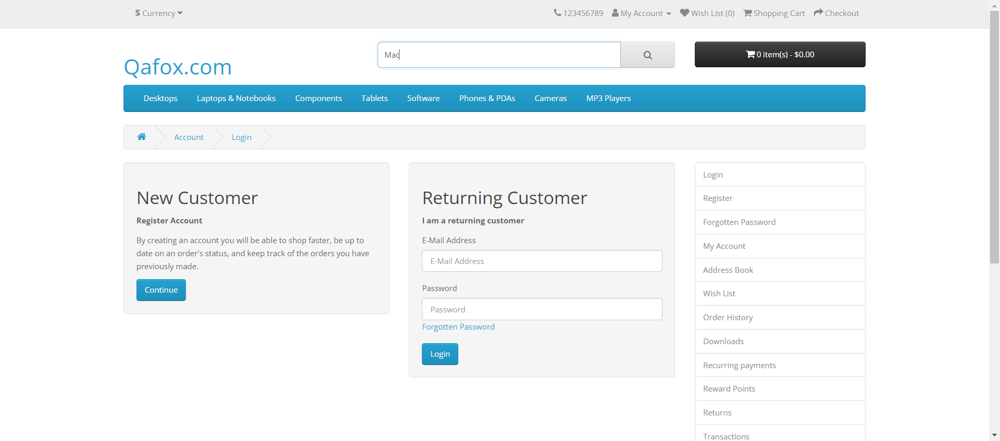
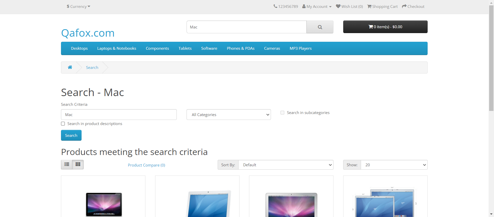
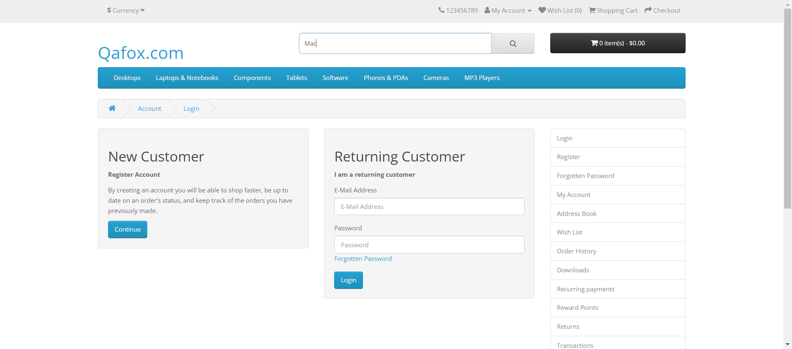
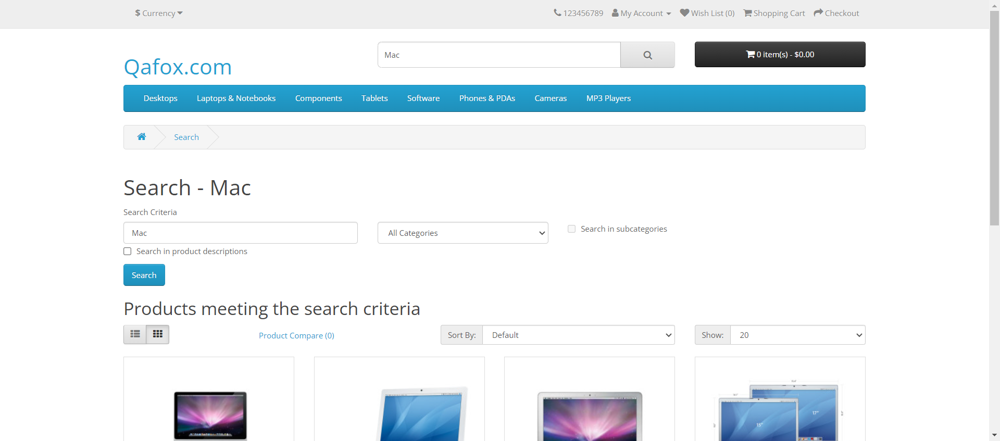

Started
Jul 12, 2024 21:56:48
Ended
Jul 12, 2024 21:57:26
Features Passed
0
Features Failed
1
Features
Scenarios
Steps
Timeline
Tags
| Name | Passed | Failed | Skipped | Others | Passed % |
|---|---|---|---|---|---|
| @validkeywordsearch | 1 | 0 | 0 | 0 | 100% |
| @invalidkeywordsearch | 0 | 1 | 0 | 0 | 0% |
| @searchByCatagory | 0 | 1 | 0 | 0 | 0% |
| @sortsearchresults | 0 | 6 | 0 | 0 | 0% |
System/Environment
| Name | Value |
|---|---|
| Engineer | Mohammed Ava (Shams) |
| Project | PDL Connect |
| Browser | Google Chrome |
| OS | Windows |
-
Search Functionality
9:56:49 PM / 00:00:36:483 Fail
Search Functionality
07.12.2024 9:56:49 PM 07.12.2024 9:57:26 PM 00:00:36:483 · #test-id=1As a customer, I want to search for a product, so that I can find what i am looking for.PassSearching for a product by keywordGiven I am on the login pagecom.pdl.hooks.Hooks.takeScreenshot(io.cucumber.java.Scenario)imageThen I should see the search boxcom.pdl.hooks.Hooks.takeScreenshot(io.cucumber.java.Scenario)image When I enter a valid keyword in the search boxcom.pdl.hooks.Hooks.takeScreenshot(io.cucumber.java.Scenario)imageAnd I click on the search buttoncom.pdl.hooks.Hooks.takeScreenshot(io.cucumber.java.Scenario)imageThen I should see a list of products that match the keyword with their images, names and pricescom.pdl.hooks.Hooks.takeScreenshot(io.cucumber.java.Scenario)imageFailSearching for a product by invalid keywordFailSearching for a product by invalid keywordcom.pdl.hooks.Hooks.setUp()Given I am on the login pageStep skippedWhen I enter an invalid "Maca" in the search boxStep skippedAnd I click on the search buttonStep skippedThen I should not be able to see any product images, names, or pricesStep skippedAnd I should receive a message.Step skippedFailSearching for a product by categoryFailSearching for a product by categorycom.pdl.hooks.Hooks.setUp()Given I am on the login pageStep skippedThen I click on “Search” button and it will land on Search pageStep skippedWhen I enter a "Mac" in the search criteriaStep skippedAnd I select a category from the drop-down menu and I click on the search buttonStep skippedThen I should see a list of products that belong to the category with their images, names, and pricesStep skippedFailSorting the search results by name, price or ratingFailSorting the search results by name, price or ratingcom.pdl.hooks.Hooks.setUp()Given I am on the login pageStep skippedGiven I have performed a search and got some resultsStep skippedWhen I select an option from the sort by drop-down menu on the right side of the pageStep skippedThen I should see the products sorted according to the option I have selectedStep skippedFailSorting the search results by name, price or ratingcom.pdl.hooks.Hooks.setUp()Given I am on the login pageStep skippedGiven I have performed a search and got some resultsStep skippedWhen I select an option from the sort by drop-down menu on the right side of the pageStep skippedThen I should see the products sorted according to the option I have selectedStep skippedFailSorting the search results by name, price or ratingcom.pdl.hooks.Hooks.setUp()Given I am on the login pageStep skippedGiven I have performed a search and got some resultsStep skippedWhen I select an option from the sort by drop-down menu on the right side of the pageStep skippedThen I should see the products sorted according to the option I have selectedStep skippedFailSorting the search results by name, price or ratingcom.pdl.hooks.Hooks.setUp()Given I am on the login pageStep skippedGiven I have performed a search and got some resultsStep skippedWhen I select an option from the sort by drop-down menu on the right side of the pageStep skippedThen I should see the products sorted according to the option I have selectedStep skippedFailSorting the search results by name, price or ratingcom.pdl.hooks.Hooks.setUp()Given I am on the login pageStep skippedGiven I have performed a search and got some resultsStep skippedWhen I select an option from the sort by drop-down menu on the right side of the pageStep skippedThen I should see the products sorted according to the option I have selectedStep skippedFailSorting the search results by name, price or ratingcom.pdl.hooks.Hooks.setUp()Given I am on the login pageStep skippedGiven I have performed a search and got some resultsStep skippedWhen I select an option from the sort by drop-down menu on the right side of the pageStep skippedThen I should see the products sorted according to the option I have selectedStep skipped
When I enter a valid keyword in the search boxcom.pdl.hooks.Hooks.takeScreenshot(io.cucumber.java.Scenario)imageAnd I click on the search buttoncom.pdl.hooks.Hooks.takeScreenshot(io.cucumber.java.Scenario)imageThen I should see a list of products that match the keyword with their images, names and pricescom.pdl.hooks.Hooks.takeScreenshot(io.cucumber.java.Scenario)imageFailSearching for a product by invalid keywordFailSearching for a product by invalid keywordcom.pdl.hooks.Hooks.setUp()Given I am on the login pageStep skippedWhen I enter an invalid "Maca" in the search boxStep skippedAnd I click on the search buttonStep skippedThen I should not be able to see any product images, names, or pricesStep skippedAnd I should receive a message.Step skippedFailSearching for a product by categoryFailSearching for a product by categorycom.pdl.hooks.Hooks.setUp()Given I am on the login pageStep skippedThen I click on “Search” button and it will land on Search pageStep skippedWhen I enter a "Mac" in the search criteriaStep skippedAnd I select a category from the drop-down menu and I click on the search buttonStep skippedThen I should see a list of products that belong to the category with their images, names, and pricesStep skippedFailSorting the search results by name, price or ratingFailSorting the search results by name, price or ratingcom.pdl.hooks.Hooks.setUp()Given I am on the login pageStep skippedGiven I have performed a search and got some resultsStep skippedWhen I select an option from the sort by drop-down menu on the right side of the pageStep skippedThen I should see the products sorted according to the option I have selectedStep skippedFailSorting the search results by name, price or ratingcom.pdl.hooks.Hooks.setUp()Given I am on the login pageStep skippedGiven I have performed a search and got some resultsStep skippedWhen I select an option from the sort by drop-down menu on the right side of the pageStep skippedThen I should see the products sorted according to the option I have selectedStep skippedFailSorting the search results by name, price or ratingcom.pdl.hooks.Hooks.setUp()Given I am on the login pageStep skippedGiven I have performed a search and got some resultsStep skippedWhen I select an option from the sort by drop-down menu on the right side of the pageStep skippedThen I should see the products sorted according to the option I have selectedStep skippedFailSorting the search results by name, price or ratingcom.pdl.hooks.Hooks.setUp()Given I am on the login pageStep skippedGiven I have performed a search and got some resultsStep skippedWhen I select an option from the sort by drop-down menu on the right side of the pageStep skippedThen I should see the products sorted according to the option I have selectedStep skippedFailSorting the search results by name, price or ratingcom.pdl.hooks.Hooks.setUp()Given I am on the login pageStep skippedGiven I have performed a search and got some resultsStep skippedWhen I select an option from the sort by drop-down menu on the right side of the pageStep skippedThen I should see the products sorted according to the option I have selectedStep skippedFailSorting the search results by name, price or ratingcom.pdl.hooks.Hooks.setUp()Given I am on the login pageStep skippedGiven I have performed a search and got some resultsStep skippedWhen I select an option from the sort by drop-down menu on the right side of the pageStep skippedThen I should see the products sorted according to the option I have selectedStep skipped
-
@validkeywordsearch
1 tests
@validkeywordsearch
1 passedStatus Timestamp TestName Pass 21:56:49 PM Searching for a product by keyword Search Functionality.Searching for a product by keyword -
@invalidkeywordsearch
1 tests
@invalidkeywordsearch
1 failedStatus Timestamp TestName Fail 21:56:56 PM Searching for a product by invalid keyword Search Functionality.Searching for a product by invalid keyword -
@searchByCatagory
1 tests
@searchByCatagory
1 failedStatus Timestamp TestName Fail 21:57:00 PM Searching for a product by category Search Functionality.Searching for a product by category -
@sortsearchresults
6 tests
@sortsearchresults
6 failedStatus Timestamp TestName Fail 21:57:04 PM Sorting the search results by name, price or rating Search Functionality.Sorting the search results by name, price or ratingFail 21:57:07 PM Sorting the search results by name, price or rating Search Functionality.Sorting the search results by name, price or ratingFail 21:57:11 PM Sorting the search results by name, price or rating Search Functionality.Sorting the search results by name, price or ratingFail 21:57:15 PM Sorting the search results by name, price or rating Search Functionality.Sorting the search results by name, price or ratingFail 21:57:18 PM Sorting the search results by name, price or rating Search Functionality.Sorting the search results by name, price or ratingFail 21:57:22 PM Sorting the search results by name, price or rating Search Functionality.Sorting the search results by name, price or rating
-
org.openqa.selenium.NoSuchSessionException
8 tests
org.openqa.selenium.NoSuchSessionException
8 failedStatus Timestamp TestName Fail 21:56:57 PM com.pdl.hooks.Hooks.setUp() Search Functionality.Searching for a product by invalid keyword.com.pdl.hooks.Hooks.setUp()Fail 21:57:01 PM com.pdl.hooks.Hooks.setUp() Search Functionality.Searching for a product by category.com.pdl.hooks.Hooks.setUp()Fail 21:57:05 PM com.pdl.hooks.Hooks.setUp() Search Functionality.Sorting the search results by name, price or rating.com.pdl.hooks.Hooks.setUp()Fail 21:57:08 PM com.pdl.hooks.Hooks.setUp() Search Functionality.Sorting the search results by name, price or rating.com.pdl.hooks.Hooks.setUp()Fail 21:57:12 PM com.pdl.hooks.Hooks.setUp() Search Functionality.Sorting the search results by name, price or rating.com.pdl.hooks.Hooks.setUp()Fail 21:57:16 PM com.pdl.hooks.Hooks.setUp() Search Functionality.Sorting the search results by name, price or rating.com.pdl.hooks.Hooks.setUp()Fail 21:57:19 PM com.pdl.hooks.Hooks.setUp() Search Functionality.Sorting the search results by name, price or rating.com.pdl.hooks.Hooks.setUp()Fail 21:57:23 PM com.pdl.hooks.Hooks.setUp() Search Functionality.Sorting the search results by name, price or rating.com.pdl.hooks.Hooks.setUp()